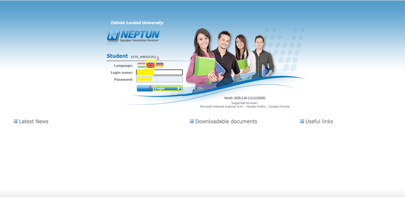

The Neptun Education System is the electronic system at ELTE which makes the administration of your studies easier and faster. You can take your lectures and exams, follow the results of your courses and financial matters, and communicate with your fellows and professors via Neptun.
HOW I CAN REACH MY NEPTUN ACCOUNT? You can reach your Neptun account by clicking on the “Student web interface” on the opening page of Neptun. Please type your Neptun ID (6 characters) and your password and log in.
WHAT IS MY NEPTUN ID AND PASSWORD?
For more information on how you will get a Neptun ID, please contact your faculty coordinator. After you arrive at ELTE you can request your Neptun password at the Quaestura Office.
If you are a first-year student and you already got your password but it is not working, please contact your faculty coordinator or the Questura Office.
If you want to change or you forgot your password, please contact the Quaestura Office for a new password.
Here you can find more information on the process.
NOTE! You can get your Neptun login password only if your data are recorded in the Neptun system.
To consult Neptun web site, please follow the below link.
Important! Before you log into your Neptun account, please read the “Neptun User Guide For Students” that you can download from the opening page of Neptun.
Credentials needed to sign in to the application:
Your Neptun ID which will be provided by the quaestura office.
Password - The respective password provided to you for your Neptun account.
You can change your password once you had got your default password from the quaestura office.
Select the Student web Interface after clicking on the link then select english and enter your user name and password
Step 1
Step 2
